HTML Basics: Lists, Images & Links
Why lists?
Lists make content easy to scan and neat to look at, and they are very useful for creating structured, accessible content on websites (screen readers announce “list, 3 items”). HTML has three kinds:
Ordered lists <ol>
Use an ordered list when the order of items matters: the steps of a recipe, or a Top 5 ranking (1st, 2nd, 3rd place).
<ol>creates the ordered list.<li>(list item) wraps each item.- The browser numbers the items for you.
List opens · <ol>
Item tags · one <li> pair per item
Item content
List closes · </ol>
<p>My To-Do List:</p>
<ol>
<li>Wake up</li>
<li>Make coffee</li>
<li>Code</li>
</ol>Output:
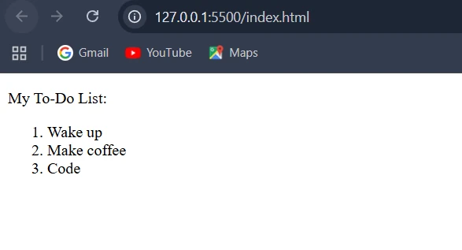
Nested ordered lists
A nested list is simply a list placed inside an <li> of another list. Use it for sub-steps.
<ol>
<li>Gather your ingredients.</li>
<li>
Mix the dry ingredients.
<ol>
<li>First, add the flour.</li>
<li>Next, add the sugar.</li>
<li>Finally, add the salt.</li>
</ol>
</li>
<li>Mix the wet ingredients.</li>
<li>Combine all ingredients and bake.</li>
</ol>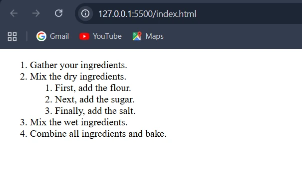
<li> The inner <ol> must sit inside an <li>, before its </li>. Putting it directly between two <li> elements is invalid HTML.Attributes of <ol>: type, start, reversed
By default an ordered list starts at 1 and uses numbers. Three attributes change that.
1 · type changes the marker
| Value | Marker | Counts like |
|---|---|---|
type="1" (default) | numbers | 1, 2, 3… |
type="A" | uppercase letters | A, B, C… |
type="a" | lowercase letters | a, b, c… |
type="I" | uppercase Roman numerals | I, II, III… |
type="i" | lowercase Roman numerals | i, ii, iii… |
<h2>1. Default Numbers (1, 2, 3)</h2>
<ol type="1">
<li>Apple</li>
<li>Banana</li>
<li>Mango</li>
</ol>
<h2>2. Uppercase Letters (A, B, C)</h2>
<ol type="A"> …same three items… </ol>
<h2>3. Lowercase Letters (a, b, c)</h2>
<ol type="a"> …same three items… </ol>
<h2>4. Uppercase Roman Numerals (I, II, III)</h2>
<ol type="I"> …same three items… </ol>
<h2>5. Lowercase Roman Numerals (i, ii, iii)</h2>
<ol type="i"> …same three items… </ol>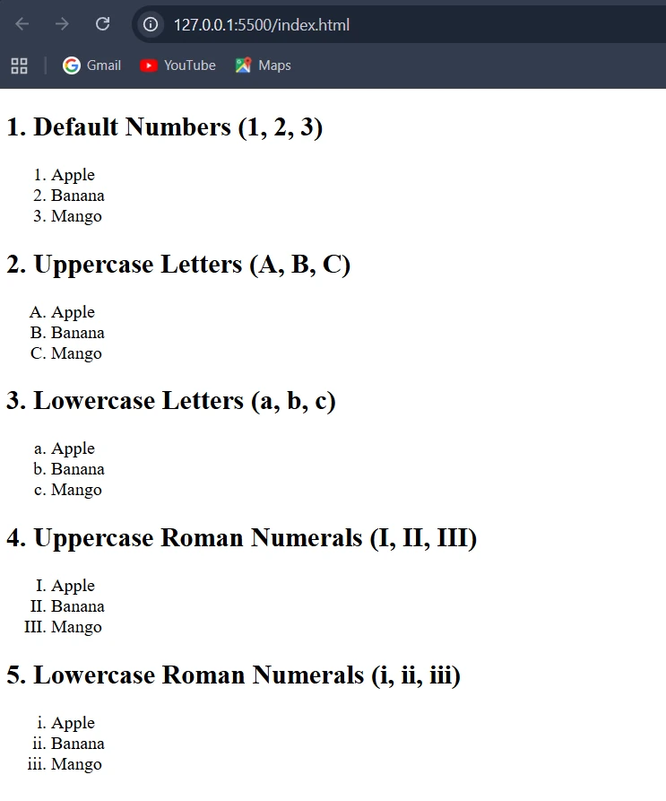
2 · start sets the first number
start defines the starting number of the list. It must always be a number, even when the type is "A" or "i".
Let’s start a numbered list at 5:
<ol start="5">
<li>Item Five</li>
<li>Item Six</li>
<li>Item Seven</li>
</ol>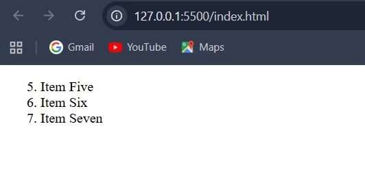
Using start and type together: to start a lettered list at “C”, write start="3", because C is the 3rd letter.
<ol type="A" start="3">
<li>Item C</li>
<li>Item D</li>
<li>Item E</li>
</ol>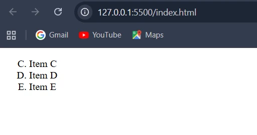
type="A" + start="3" gives C, D, E.3 · reversed counts down
reversed is a boolean attribute: it needs no value. Just writing the word makes the list count down.
<ol reversed>
<li>Three</li>
<li>Two</li>
<li>One</li>
</ol>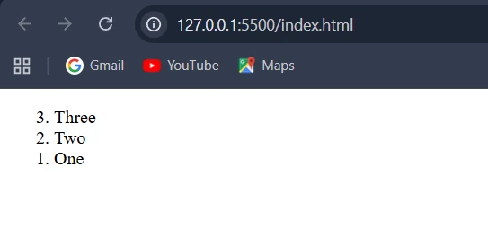
Unordered lists <ul>
Use an unordered list when the order doesn’t matter: a shopping list (buy apples, bananas or mangoes in any order) or a menu card.
<ul>creates the unordered list.<li>wraps each item, just like in<ol>.- The browser adds a bullet (•) before each item.
<p>My Shopping List:</p>
<ul>
<li>Milk</li>
<li>Eggs</li>
<li>Bread</li>
</ul>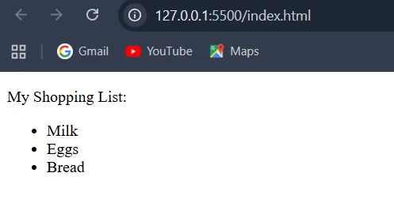
The type attribute: bullet style
The main attribute used with <ul> is type, which changes the style of the bullets: type="disc" → default bullet (●), type="circle" → hollow circle (○), type="square" → square bullet (■).
<h2>1. Disc (Default)</h2>
<ul type="disc">
<li>Apples</li>
<li>Bananas</li>
<li>Mangoes</li>
</ul>
<h2>2. Circle</h2>
<ul type="circle"> …same three items… </ul>
<h2>3. Square</h2>
<ul type="square"> …same three items… </ul>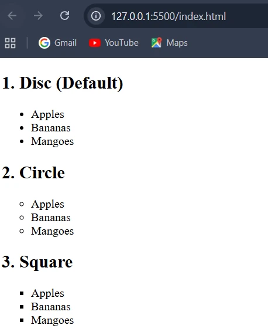
disc ● (default), circle ○, square ■.type attribute on <ul> is obsolete in HTML5. Browsers still honour it, but the modern way is the CSS property list-style-type, which you’ll meet in the CSS lessons. (On <ol>, type is still valid.)Nested unordered lists
<ul>
<li>Fruits
<ul>
<li>Apples</li>
<li>Bananas</li>
</ul>
</li>
<li>Vegetables
<ul>
<li>Carrot</li>
<li>Spinach</li>
</ul>
</li>
</ul>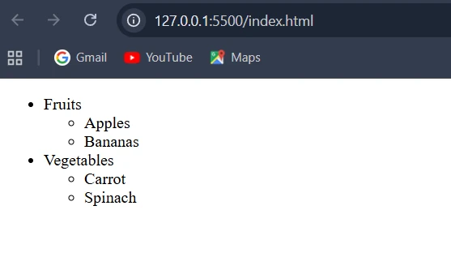
<ul> is indented and the browser switches to hollow circles for the inner level.Description lists <dl>
<dl>
The description list container.
<dt>
The term: what you want to define.
<dd>
The description: its meaning or details.
<dl>
<dt>HTML</dt>
<dd>It is used to create the structure of web pages.</dd>
<dt>CSS</dt>
<dd>It is used to style and design web pages.</dd>
<dt>JavaScript</dt>
<dd>It makes web pages interactive and dynamic.</dd>
</dl>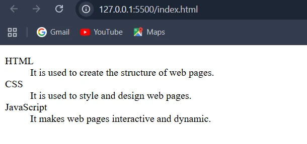
<dl>: each word is a <dt> and each definition a <dd>.Images with <img>
Images make a page attractive and help users understand content, just as pictures make a textbook easier to read. The <img> tag shows an actual picture (a photo, logo or icon) from your computer or the internet.
It is a void element
<img> has no closing tag. There is no </img>.
It needs attributes
On its own, <img> does nothing. Attributes tell the browser which picture to show and how.
The tag · opens and ends in one piece
Attribute names · src, alt, loading…
Values · where, what, when
src: the image’s address
src (source) tells the browser where to find the image file. Think of it as the picture’s home address: give the wrong address and the browser can’t find it. There are two kinds of path:
Local path: the image is saved in your project folder
<!DOCTYPE html>
<html>
<head>
<title>image</title>
</head>
<body>
<img src="/images/cat.jpg">
</body>
</html>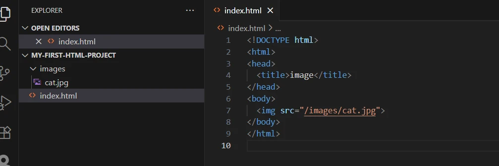
images/cat.jpg sits next to index.html.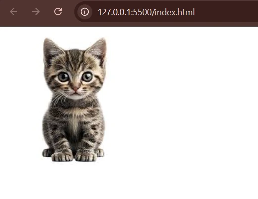
Here, the browser looks inside the images folder for a file called cat.jpg.
Online URL: the image is on the internet
<img src="https://thumbs.dreamstime.com/b/png-d-baby-cat-front-view-against-transparent-background-pet-illustrations-cute-animal-designs-digital-art-projects-png-d-381620694.jpg">The output is the same cat picture as above, this time fetched from another website.
alt: backup text
alt (alternative text) is a short text description of the image. It is shown if the image doesn’t load, and it helps visually impaired users through screen readers.
<img src="flower.png" alt="A red rose flower">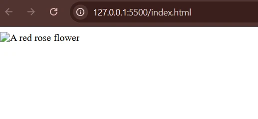
Missing image
The browser shows the alt text instead.
Accessibility
Screen readers read it aloud to blind and visually impaired users.
SEO
Search engines use it to understand what the image shows.
Size, loading and hover text
width and height
These set how wide or tall the image appears, in pixels. If you give only one, the browser scales the other to keep the picture’s proportions.
<img src="/images/cat.jpg" width="100">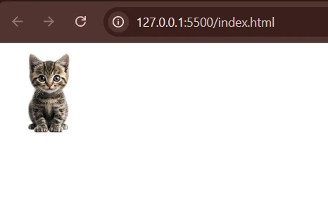
width="100": a small cat, height scaled to match.<img src="/images/cat.jpg" height="500">height="500": a big cat, width scaled to match.width and height attributes. Use CSS instead: it gives more flexibility and keeps your code cleaner. We’ll learn how to do this in the upcoming CSS lectures. But writing the image’s real width and height in HTML is still good practice: the browser reserves the right space before the image loads, so the page doesn’t jump around.loading: when should the image load?
loading="eager"
Load the image immediately. This is the default.
loading="lazy"
Load the image only when it is about to appear on screen.
<img src="mountain.jpg" alt="Snowy mountain" loading="lazy">loading="lazy". Keep the main image at the very top eager, so it appears straight away.title: extra info on hover
The title attribute adds a small popup message when you move the mouse over the image.
<img src="/images/cat.jpg" title="A cute cat" alt="Cat">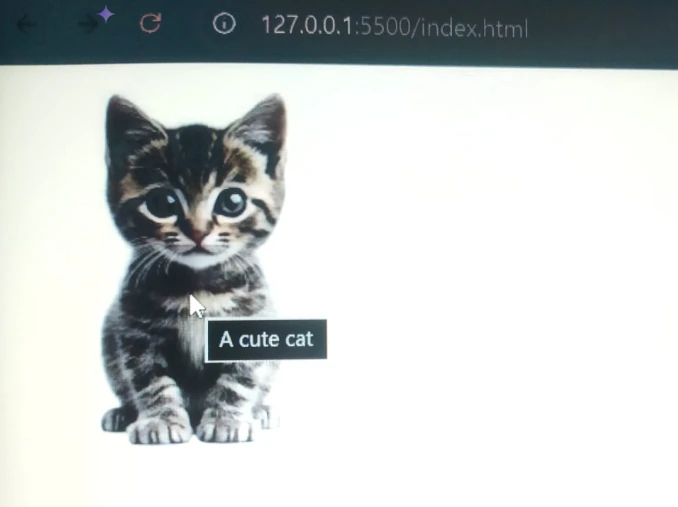
title is not a replacement for alt Touch-screen users never see hover text, and screen readers rely on alt. Always write alt; add title only as a bonus.Links with the anchor tag <a>
The anchor tag <a> is one of the most important tags in HTML. It creates a hyperlink, the thing that makes the web clickable. Click the link text and you go to another page, another section of the same page, or download a file. In very simple words, it is a bridge that connects one page to another page or website.
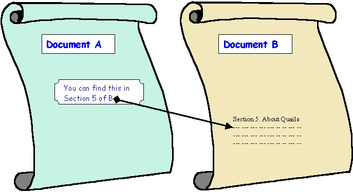
<a href="URL">Link Text</a><a> tag is a door. The text inside it (“Click here”) is the label on the door. The href is the address of the place it leads to. Clicking the link is opening the door and walking through.Opening tag · the door
href · the most important attribute
Destination · where the door leads
Link text · the visible, clickable label
Closing tag · </a>
Common attributes of <a>: href, target, rel and download. href (hypertext reference) is the destination address: it tells the browser where to go when the user clicks.
Three kinds of links
1 · External link: “go to another building”
Takes the user away from your site to a completely different, third-party site (like Google, Twitter or a news article): you leave your building and go to a new one. The href must be the full, absolute URL starting with https:// (or the less secure http://).
<a href="https://www.google.com">Click me to go to Google</a><a href="www.google.com">Google</a>https://, the browser treats www.google.com as a file in your own site and looks for yoursite/www.google.com, which doesn’t exist.2 · Internal link: “go to another room”
Takes the user to another page inside your own website, like walking down the hall from the Homepage room to the About Us room.
<a href="/about-us.html">About Us</a>3 · In-page link: “go to that chair”
Jumps (scrolls) to a different spot on the very same page. You are not leaving the room (the web page); you are instantly moving from the “door” to “that specific chair over there”. Two steps:
- 1Label the spot with an
id<h2 id="contact">Contact Us</h2>→ “contact” is the name tag of this place - 2Link to it with
#+ the same name<a href="#contact">Go to Contact</a>→ “find id="contact" and jump there”
<a href="#contact">Go to Contact</a>
<!-- …lots of content… -->
<h2 id="contact">Contact Us</h2>id, like #link-types.target, rel and download
target: which tab opens?
By default a link opens in the same tab, replacing the current page. target changes that. Think of each browser tab as a room.
target="_self" (default)
Opens in the same tab: the door leads to another part of the same room. You rarely write it since it is the default.
target="_blank" (most common)
Opens in a new tab or window: the door builds a new room. Perfect for links to external websites, so the user doesn’t leave your site.
<a href="page2.html" target="_self">Go to Page 2 (same tab)</a>
<a href="https://www.google.com" target="_blank">
Go to Google (new tab)
</a>rel: the relationship
rel stands for relationship. It tells the browser and search engines what kind of connection exists between your page and the linked page.
| Value | What it does |
|---|---|
nofollow | Tells search engines not to follow the link or pass any SEO value to it. |
noopener | Keeps your page safe when a link opens in a new tab (target="_blank"): the new page can’t control your page through window.opener. |
noreferrer | Hides your page’s address (the “referrer”) from the site the user goes to. It also implies noopener. |
<a href="https://example.com" target="_blank" rel="noopener noreferrer">Visit Example</a>noopener to target="_blank" links automatically, but writing it explicitly is still a common, safe habit.download: save instead of open
Normally a link opens the file or page. With download (a boolean attribute), the browser downloads the file instead.
<a href="files/sample.pdf" download>Download PDF</a>Clicking it saves sample.pdf rather than opening it in the browser. (This works for files on your own site; browsers ignore it for files from other sites.)
download, “Open docs” links with target="_blank" rel="noopener", and in-page # anchors for long help pages. Security reviews at enterprise customers will flag _blank links to untrusted sites without rel="noopener".Key terms
- Ordered list (
<ol>) - A list whose items are numbered automatically, used when the order of items matters.
- Unordered list (
<ul>) - A bulleted list, used when the order of items doesn’t matter.
- List item (
<li>) - The element that wraps each item inside an
<ol>or<ul>. - Description list (
<dl>) - A list of terms (
<dt>) each followed by its description (<dd>), like a glossary. - Nested list
- A list placed inside an
<li>of another list, used for sub-items or sub-steps. - Boolean attribute
- An attribute that needs no value; writing its name switches it on, as with
reversedordownload. src- The image attribute giving the file’s location, either a local path in your project or a full online URL.
- Alt text
- The
altattribute’s short description of an image, shown if it fails to load and read aloud by screen readers. - Lazy loading
loading="lazy": the browser fetches an image only when it is about to scroll into view, saving time and data.- Hyperlink
- A clickable link, created with
<a>, that takes the user to another page, another spot on the page, or a file. href- The anchor attribute holding the link’s destination address.
- Absolute vs relative URL
- An absolute URL is the full address including
https://(for external sites); a relative one, likeabout-us.html, points to a file within your own site. - In-page link
- A link whose
hrefis#plus an element’sid, which scrolls to that spot on the same page. target="_blank"- Makes a link open in a new tab or window instead of replacing the current page.
rel- Describes the relationship to the linked page, e.g.
nofollow,noopener,noreferrer.
Self-check
Pick an answer. You’ll see right away whether it’s correct and why.
You are writing the steps to install Python. Which list fits best?
<ul><ol><dl>- Several
<p>tags
Installation steps must happen in order, so the numbered ordered list is right.
Which code starts a lettered list at “C”?
<ol type="C"><ol start="C"><ol type="A" start="C"><ol type="A" start="3">
start must always be a number; C is the 3rd letter, and type="A" shows letters.
What does <ol reversed> with three items show?
- 3, 2, 1
- 1, 2, 3 with items in reverse order
- An error, because reversed needs a value
- Roman numerals
reversed is a boolean attribute that makes the numbering count down. The items stay in the order you wrote them.
In a description list, which tag holds the meaning of a term?
<dt><li><dd><dl>
<dt> is the term, <dd> is its description, and <dl> wraps the whole list.
Your image path is wrong and the picture fails to load. What does the user see if you wrote alt?
- A blank page
- The alt text in place of the image
- The title text
- The file name
The alt text is the backup that appears when the image can’t be shown (and what screen readers read).
A gallery page has 200 photos. Which attribute helps it load fast?
title="fast"loading="eager"width="10"loading="lazy"
Lazy loading fetches each photo only as the user scrolls near it, instead of all 200 at once.
Why does <a href="www.google.com"> fail?
hrefcannot contain dots- Links need
target - Without
https://the browser treats it as a file path in your own site - Google blocks links
External links need an absolute URL. Otherwise the address is read as relative to your page.
Which pair creates a working in-page jump to a “Pricing” heading?
<h2 id="pricing">and<a href="#pricing"><h2 name="pricing">and<a href="pricing"><h2 id="#pricing">and<a href="id=pricing"><h2>and<a href="Pricing">
Label the spot with id="pricing" and link with # plus the same name.
What does the download attribute do on a link to report.pdf?
- Opens the PDF in a new tab
- Saves the file instead of opening it
- Hides the link from search engines
- Compresses the file
Normally the browser opens the file; download tells it to save the file instead.
All of it, in one sentence
Use <ol> when order matters, <ul> when it doesn’t and <dl> for terms and meanings; show pictures with <img> and always give it src and alt; and connect pages with <a href>, choosing target, rel and download as needed.
— Vishwa Mohan